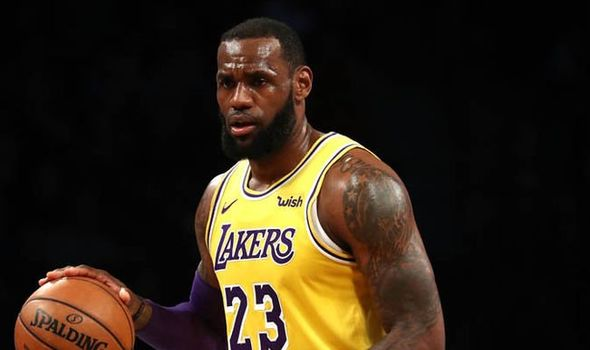
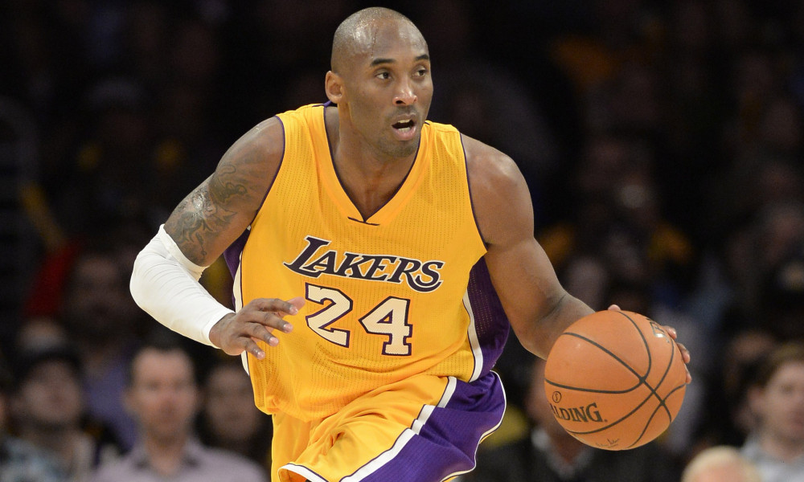
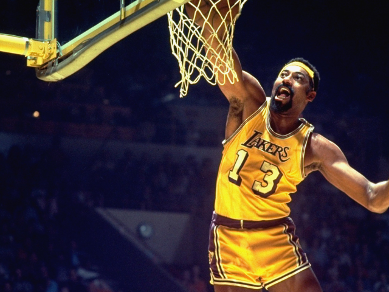
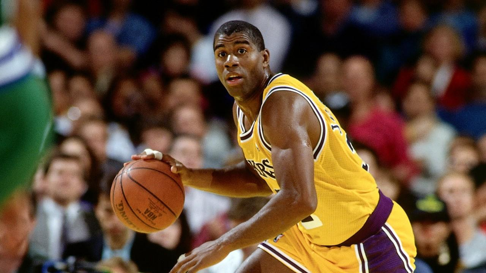
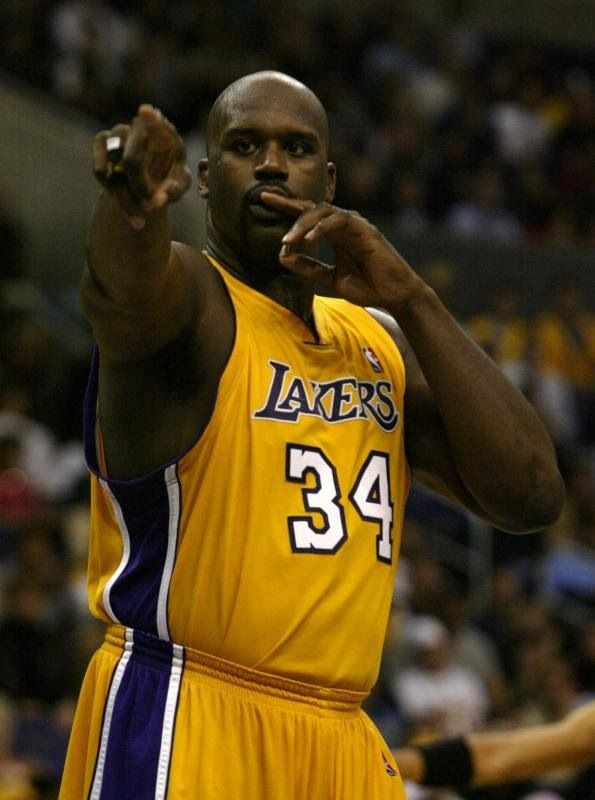
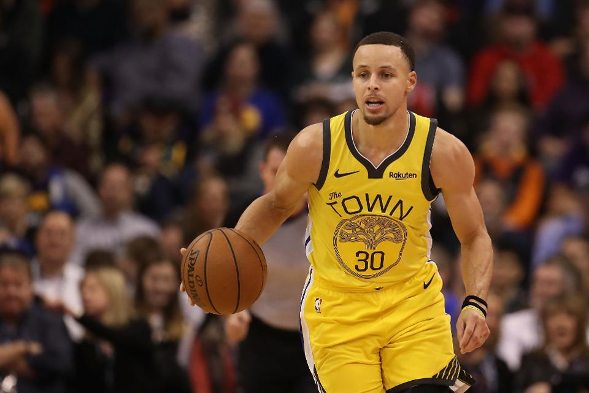
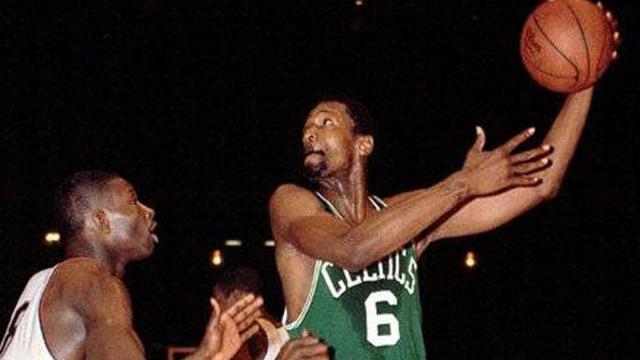

Top 10 Basketball Players
Michael Jordan
Lebron James
Kobe Bryant
Wilt Chamberlain
Magic Johnson
Larry Bird
Shaquille O'Neal
Steph Curry
Kareem Abdul-Jabaar
Bill Russell
Michael Jordan was a shooting guard for the Chicago Bulls. During his time with the Bulls he won multiple MVP trophies and 6 Championships.

For more info on Michael Jordan, Visit the NBA's Website.
Lebron James is a forward, who has played for the Los Angeles Lakers, Cleveland Cavaliers, and Miami Heat. He has won multiple MVPs, and he has also won 3 Championships.
For more info on Lebron James, Visit his Website
Kobe Bryant is a Shooting Guard who played for the Los Angeles Lakers. He won 5 Championships with the Lakers. He has scored 81 points in one game, the second most in NBA History.
For more info,Visit Basketball Reference
Wilt Chamberlain was a Center for the Los Angeles Lakers. He is the only player in NBA History to score 100 points in one game.
To learn more about Wilt Chamberlain, Visit The NBA's Website
Magic Johnson was a Point Guard for the Los Angeles Lakers. He is one of the tallest point guards ever, standing at 6 foot 7 inches.
For more on Magic, Visit his Website
Larry Bird was a forward for the Boston Celtics. He is known as one of the best shooters ever, and has high averages in points, assists, and rebounds. He won 3 Championships with the Boston Celtics.

For more on Larry Bird, Visit the NBA's Website
Shaquille O'Neal was a center for the Los Angeles Lakers. He won three championships with the Lakers, and then he was traded to the Miami Heat in 2006, and won a championship with them.
For more on Shaq, Visit his Website
Steph Curry is a Point Guard for the Golden State Warriors. He is a great shooter, and is currently third on the all time 3 pointers list, with many games left in his career.
For more information, Visit Basketball Reference
Kareem Abdul-Jabaar was a Center for the Los Angeles Lakers and Milwaukee Bucks. He won a total of 6 Championships with these teams.

For more information, Visit his Website
Bill Russell was a Center for the Boston Celtics. He has won 11 Championships, the most by any player in the NBA.
For more information, Visit the NBA's Website